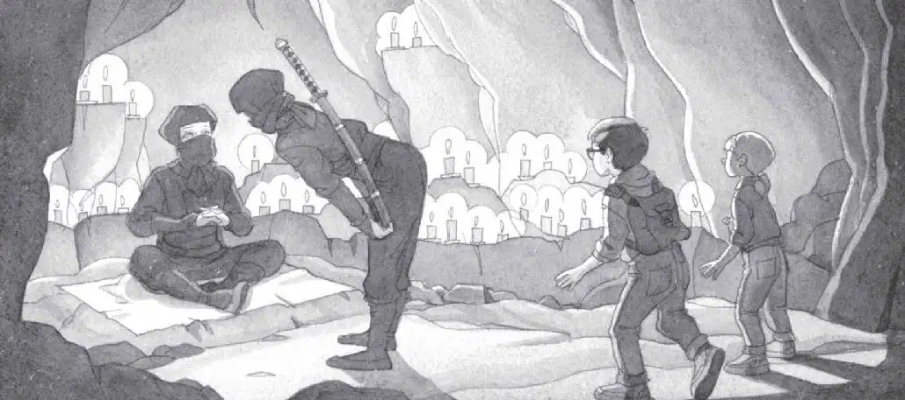

Jack and Annie went into the cave. They followed the ninja through the darkness.
The back of the cave was lit with dozens of candles. Shadows danced on the walls.
In the flickering light, Jack saw a dark figure sitting on a woven mat.
The ninja master.
The ninja bowed to the master. Then he stepped to one side.
The master stared at Jack and Annie.
“Sit,” he said.

Jack and Annie sat on the cold, hard floor.
Squeak.
The mouse poked its head out of Annie’s pouch.
“It’s okay, Peanut,” said Annie.
The master stared at the mouse for a moment. Then he looked at Jack. “Who are you?” he asked.
“I’m Jack and that’s my sister, Annie,” Jack answered.
“Where do you come from?” the master asked.
“Frog Creek, Pennsylvania,” Annie answered.
“Why are you here?” he asked.
“We’re trying to help our friend Morgan le Fay,” said Jack. “She left us a message.”
Annie pointed to the short ninja. “We gave the message to him.”
“You mean, you gave the message to her,” said the ninja master. “And she has given it to me.”
“She?” said Jack and Annie together.
The woman ninja’s eyes sparkled. Jack thought she might be smiling.
The master held up Morgan’s note.
“Perhaps I can help you,” he said. “But first you must prove yourselves worthy of my help.”
Just then the tall ninja appeared. He made a sign to the master.
The master stood up. He handed Morgan’s note to Annie.
“We must go now,” he said. “The samurai are close.”
“Samurai?” said Jack. He knew that the samurai were fierce Japanese fighters.
“Were they the ones in the valley?” Jack asked. “The ones with the torches?”
“Yes, our family is at war with them,” said the master. “We must leave before they find us.”
“But what about helping Morgan?” said Annie.
The master strapped on his sword.
“I have no time now,” he said. “I must go.”
“Can’t we go with you?” said Annie.
“No, there is no place for you where we are going. You must find your way back to your house in the trees.”
“Alone?” said Jack.
“Yes. You must go alone. And beware of the samurai.”
“Why?” said Jack.
“They will think you are one of us,” said the master. “They will ask you no questions. They will show you no mercy.”
“Yikes,” whispered Annie.
“But you have seen the way of the ninja. You can practice it yourselves now,” said the master.
“H-how?” said Jack.
“Remember three things,” said the master.
“What?” said Jack.
“Use nature. Be nature. Follow nature.”
“I can do that!” Annie said.
Jack looked at her. “You can?” he said.
The master turned to Jack. “Your tree house lies to the east. That is the way you must go,” he said.
How? wondered Jack. How do we find the east?
Before he could ask, the master bowed. Then he disappeared into the shadows.
The two ninjas led Jack and Annie out of the cave, into the moonlight.
The tall one pointed at the pine forest. Then they too disappeared into the darkness.
Jack and Annie were all alone.